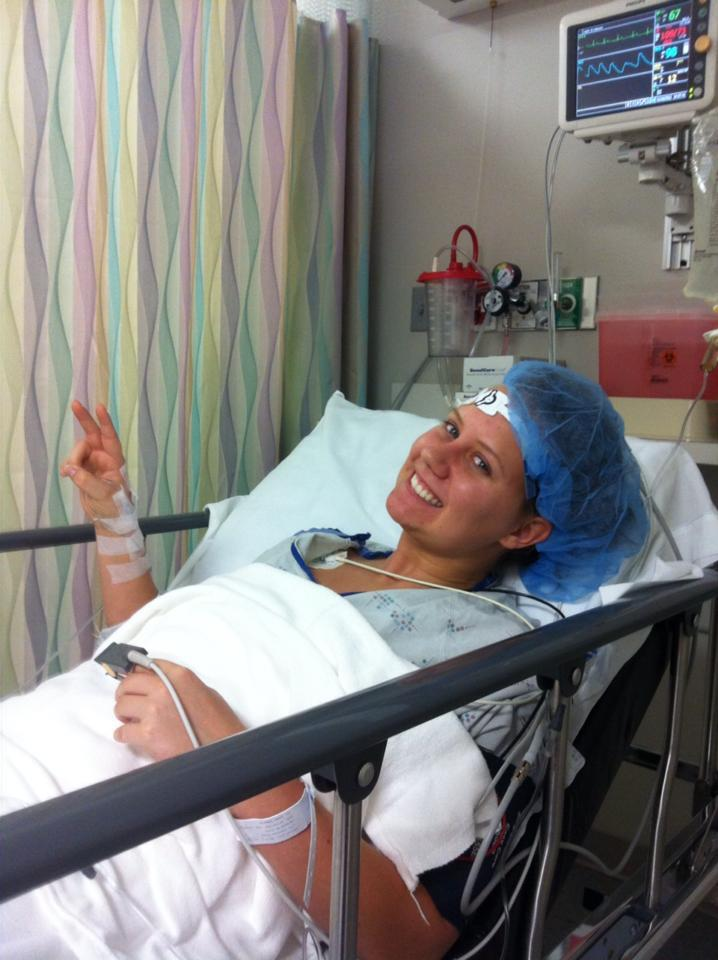
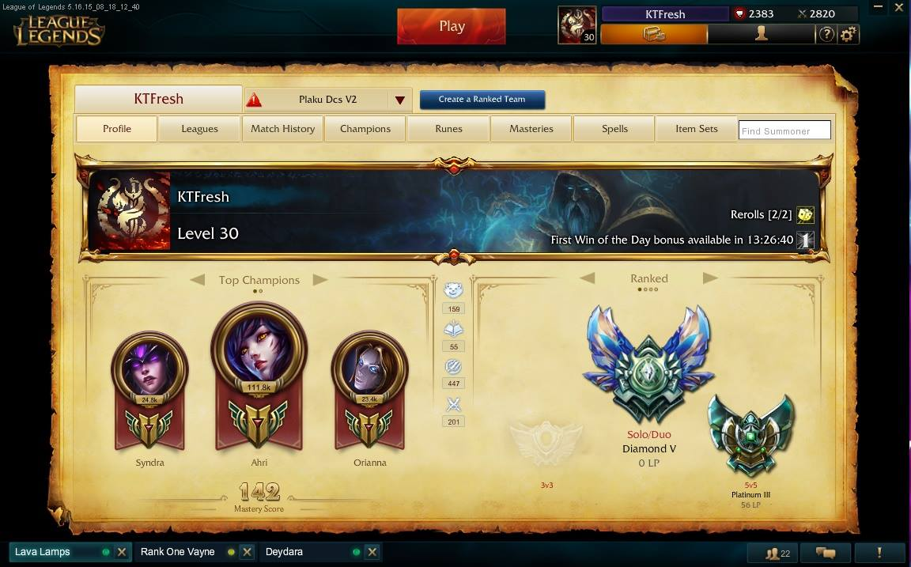
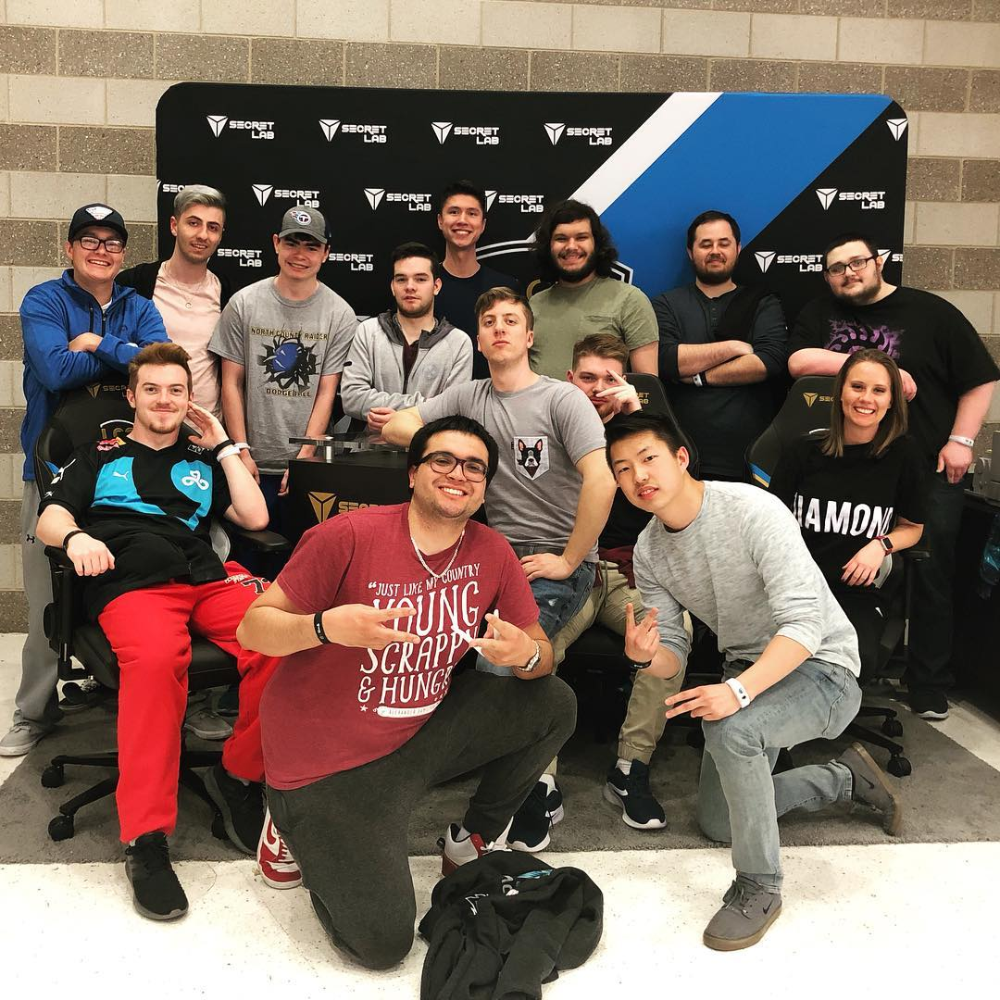

How I started playing League of Legends
An unfortunate ACL tear in high school left me unable to continue playing soccer for the remainder of high school. Therefore, I was not healed in time to be scouted for colleges, and life had to go on without my favorite sport.
In my first semester of college, I was introduced to League of Legends by the friends I made in the dorms. We were all trying to pass each other in rank, and I quickly discovered that League provided the competitive outlet that I lacked without soccer. After one season of play, I achieved diamond rank for the first time.
Playing League since the end of 2013, I have made so many friends along the way who have all been immensely impactful in my life. After 5+ years of friendship, we all finally met for the first time at the beginning of this year, for LCS Spring finals at Chaifetz Arena.
Here is a montage of when I was playing at my best!